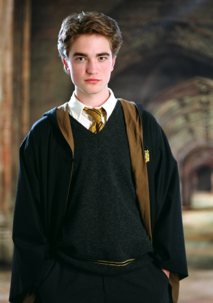
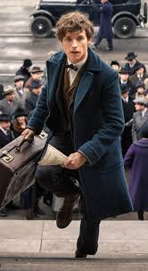

| Personnages | Biographies |
|---|---|
|  |
Cédric Diggory
Parents: Amos et Mrs Diggory
Cedric Diggory était le fils d'Amos Diggory. Il était un élève de Poufsouffle, capitaine et attrapeur de l'équipe de Quidditch de Poufsouffle.
Dans les années 1990, Cedric Diggory emprunte le livre Le Quidditch à travers les âges à la bibliothèque de Poudlard et doit le rapporter le 3 juillet.[4]
En 1993, il joue comme attrapeur et capitaine de l'équipe de Poufsouffle contre l'équipe de Gryffondor, cette dernière se faisant battre lorsque des Détraqueurs provoquent l'évanouissement de Harry Potter, l'attrapeur adverse.[5]
Lors de sa sixième année, il est sélectionné par la Coupe de Feu pour représenter Poudlard au Tournoi des Trois Sorciers.[6]
Pour la Première tâche, il affronte un Suédois à museau court qu'il bat en métamorphosant une pierre en chien pour que le dragon s'intéresse au chien plutôt qu'à lui.[7]
Il ira au Bal de Noël avec Cho Chang.[8]
Pour la Deuxième tâche il utilise un Sortilège de Têtenbulle pour pouvoir respirer sous l'eau. Il se perd mais finit par trouver sa prisonnière, Cho, qu'il libère avec un couteau.[9]
Malheureusement, à l'issue de la troisième tâche, Cedric Diggory et Harry Potter sont transportés par un Portoloin au cimetière de Little Hangleton où Cedric est assassiné par Peter Pettigrow sur ordre de Voldemort.[10]
|
|  |
Nobert Dragonneau
Parents: Mr et Mrs Dragonneau
Newton « Newt » Artemis Fido Scamander, plus connu en France sous son pseudonyme d'auteur Norbert Dragonneau,[4] est un célèbre magizoologiste auteur du livre Vie et habitat des animaux fantastiques.
Norbert Dragonneau naît en 1897. Il développe un intérêt pour les créatures dès son plus jeune âge avec l'aide de sa mère qui se consacre à l'élevage d'hippogriffes de compagnie. À sept ans, il a pour habitude de s'enfermer dans sa chambre et de démembrer des Horglups.[5]
En 1908, il entre à Poudlard et est envoyé à Poufsouffle par le Choixpeau magique.[6] À l'école, il noue rapidement une amitié avec Leta Lestrange avec qui il partage sa passion pour les animaux magiques, en prenant soin d'eux et en les élevant.[7] Le temps passe, et tous deux finissent par tomber amoureux l'un de l'autre.[8]
En 1913, alors que Norbert est en cinquième ou en sixième année d'étude, Leta commet un accident avec un Chartier en metant en danger la vie de l'un de ses camarades de classe et en violant les lois de protection des animaux du Département de contrôle et de régulation des créatures magiques. Par amour pour elle, Norbert décide de prendre la responsabilité de l'accident. Grâce à l'insistance du professeur de métamorphose, Albus Dumbledore, Norbert ne sera finalement pas renvoyé.[9][7]
En 1915, à la fin de sa septième année, Norbert passe ses ASPIC et obtient son diplôme.[5]
|